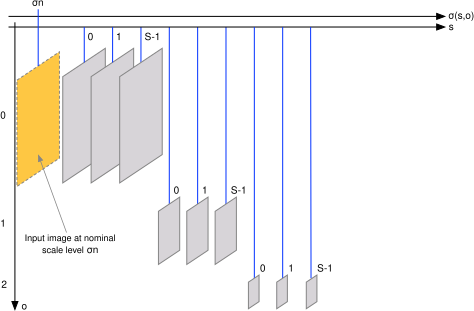
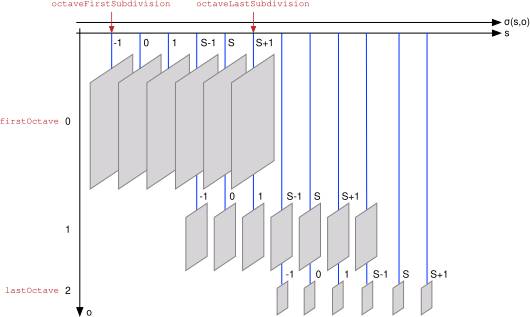

Table of Contents
This page discusses the notion of Gaussian scale space and the relative data structure. For the C API see scalespace.h and Getting started.
A scale space is representation of an image at multiple resolution levels. An image is a function \(\ell(x,y)\) of two coordinates \(x\), \(y\); the scale space \(\ell(x,y,\sigma)\) adds a third coordinate \(\sigma\) indexing the scale. Here the focus is the Gaussian scale space, where the image \(\ell(x,y,\sigma)\) is obtained by smoothing \(\ell(x,y)\) by a Gaussian kernel of isotropic standard deviation \(\sigma\).
Scale space definition
Formally, the Gaussian scale space of an image \(\ell(x,y)\) is defined as
\[ \ell(x,y,\sigma) = [g_{\sigma} * \ell](x,y,\sigma) \]
where \(g_\sigma\) denotes a 2D Gaussian kernel of isotropic standard deviation \(\sigma\):
\[ g_{\sigma}(x,y) = \frac{1}{2\pi\sigma^2} \exp\left( - \frac{x^2 + y^2}{2\sigma^2} \right). \]
An important detail is that the algorithm computing the scale space assumes that the input image \(\ell(x,y)\) is pre-smoothed, roughly capturing the effect of the finite pixel size in a CCD. This is modelled by assuming that the input is not \(\ell(x,y)\), but \(\ell(x,y,\sigma_n)\), where \(\sigma_n\) is a nominal smoothing, usually taken to be 0.5 (half a pixel standard deviation). This also means that \(\sigma = \sigma_n = 0.5\) is the finest scale that can actually be computed.
The scale space structure stores samples of the function \(\ell(x,y,\sigma)\). The density of the sampling of the spatial coordinates \(x\) and \(y\) is adjusted as a function of the scale \(\sigma\), corresponding to the intuition that images at a coarse resolution can be sampled more coarsely without loss of information. Thus, the scale space has the structure of a pyramid: a collection of digital images sampled at progressively coarser spatial resolution and hence of progressively smaller size (in pixels).
The following figure illustrates the scale space pyramid structure:

The pyramid is organised in a number of octaves, indexed by a parameter o. Each octave is further subdivided into sublevels, indexed by a parameter s. These are related to the scale \(\sigma\) by the equation
\[ \sigma(s,o) = \sigma_o 2^{\displaystyle o + \frac{s}{\mathtt{octaveResolution}}} \]
where octaveResolution is the resolution of the octave subsampling \(\sigma_0\) is the base smoothing.
At each octave the spatial resolution is doubled, in the sense that samples are take with a step of
\[ \mathtt{step} = 2^o. \]
Hence, denoting as level[i,j] the corresponding samples, one has \(\ell(x,y,\sigma) = \mathtt{level}[i,j]\), where
\[ (x,y) = (i,j) \times \mathtt{step}, \quad \sigma = \sigma(o,s), \quad 0 \leq i < \mathtt{lwidth}, \quad 0 \leq j < \mathtt{lheight}, \]
where
\[ \mathtt{lwidth} = \lfloor \frac{\mathtt{width}}{2^\mathtt{o}}\rfloor, \quad \mathtt{lheight} = \lfloor \frac{\mathtt{height}}{2^\mathtt{o}}\rfloor. \]
Scale space geometry
In addition to the parameters discussed above, the geometry of the data stored in a scale space structure depends on the range of allowable octaves o and scale sublevels s.
While o may range in any reasonable value given the size of the input image image, usually its minimum value is either 0 or -1. The latter corresponds to doubling the resolution of the image in the first octave of the scale space and it is often used in feature extraction. While there is no information added to the image by upsampling in this manner, fine scale filters, including derivative filters, are much easier to compute by upsalmpling first. The maximum practical value is dictated by the image resolution, as it should be \(2^o\leq\min\{\mathtt{width},\mathtt{height}\}\). VLFeat has the flexibility of specifying the range of o using the firstOctave and lastOctave parameters of the VlScaleSpaceGeometry structure.
The sublevel s varies naturally in the range \(\{0,\dots,\mathtt{octaveResolution}-1\}\). However, it is often convenient to store a few extra levels per octave (e.g. to compute the local maxima of a function in scale or the Difference of Gaussian cornerness measure). Thus VLFeat scale space structure allows this parameter to vary in an arbitrary range, specified by the parameters octaveFirstSubdivision and octaveLastSubdivision of VlScaleSpaceGeometry.
Overall the possible values of the indexes o and s are:
\[ \mathtt{firstOctave} \leq o \leq \mathtt{lastOctave}, \qquad \mathtt{octaveFirstSubdivision} \leq s \leq \mathtt{octaveLastSubdivision}. \]
Note that, depending on these ranges, there could be redundant pairs of indexes o and s that represent the same pyramid level at more than one sampling resolution. In practice, the ability to generate such redundant information is very useful in algorithms using scalespaces, as coding multiscale operations using a fixed sampling resolution is far easier. For example, the DoG feature detector computes the scalespace with three redundant levels per octave, as follows:

Algorithm and limitations
Given \(\ell(x,y,\sigma_n)\), any of a vast number digitial filtering techniques can be used to compute the scale levels. Presently, VLFeat uses a basic FIR implementation of the Gaussian filters.
The FIR implementation is obtained by sampling the Gaussian function and re-normalizing it to have unit norm. This simple construction does not account properly for sampling effect, which may be a problem for very small Gausisan kernels. As a rule of thumb, such filters work sufficiently well for, say, standard deviation \(\sigma\) at least 1.6 times the sampling step. A work around to apply this basic FIR implementation to very small Gaussian filters is to upsample the image first.
The limitations on the FIR filters have relatively important for the pyramid construction, as the latter is obtained by incremental smoothing: each successive level is obtained from the previous one by adding the needed amount of smoothing. In this manner, the size of the FIR filters remains small, which makes them efficient; at the same time, for what discussed, excessively small filters are not represented properly.